1과목: 조경사
1. 창덕궁 옥류천 주변에 있는 정자가 아닌 것은?
2. 다음 중 일본의 시대별 정원양식이 맞지 않는 것은?
3. 고려시대 정원에 관한 내용이 기술된 문집이 아닌 것은?
4. 명쾌한 균제미로부터 벗어나 번잡하고 지나친 세부기교에 치우치고 복잡한 곡선, 도금한 쇠붙이 장식, 다채로운 색 대리석 등을 풍부히 사용한 정원 양식은?
5. 중국에서 조경에 관계되는 한자의 의미 설명이 잘못된 것은?
6. 다음 중 중국 정원의 특성으로 가장 거리가 먼 것은?
7. 경복궁 교태전 후원을 지칭하는 다른 명칭은?
8. 고대 신들을 위하여 축조한 건축물이나 조형물은 경관적으로 큰 역할을 하였다. 다음 중 신(神)을 위해 조성한 시설에 해당하지 않는 것은?
9. 연꽃을 군자에 비유한 애련설의 저자는?
10. 일본의 도산(모모야마)시대의 다정(茶定)을 구성하는 요소로 가장 부적합한 것은?
11. 중국 명나라 원림에 관한 설명 중 틀린 것은?
12. 다음 중 근대 조경의 흐름에 있어 적절하지 않은 설명은?
13. 일본의 고산수정원은 어떤 목적에 의하여 조성되었는가?
14. 고대 그리스 일반시민의 주택에 대한 설명이 아닌 것은?
15. 다음 설명에 해당하는 이탈리아의 정원은?
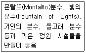
16. 동양 3국에서 공통적으로 행해지던 곡수연과 관련이 없는 대상지는?
17. 전통담장 조영에 있어 벽돌, 기와 등으로 구멍이 뚫어지게 쌓은 담은?
18. 미국 역사상 최초의 수도권 공원계통을 수립한 사람은?
19. 원야(園冶)에 대한 설명으로 옳지 않은 것은?
20. 알함브라 궁전의 파티오에 대한 설명 중 옳지 않은 것은?
2과목: 조경계획
21. 교통과 동선계획은 교통량을 파악하고 적절한 교통량과 방향을 설정하는 계획이다. 주거지, 공원, 어린이놀이터 등에 적합한 도로형태에 가장 적합한 것은?
22. Avery(1977)의 자료 중 수지형(樹枝型)의 하천 패턴이 형성될 가능성이 가장 높고, 점토의 함량에 따라 변화가 심한 암석 지질은?
23. 다음 중 야생동물(wild life)의 서식처(분포)와 가장 밀접한 관련이 있는 인자는?
24. 「도시공원 및 녹지 등에 관한 법률」 시행규칙 중 도시공원별 유치거리(A) 및 규모(B)의 기준이 맞는 것은?
25. 동선계획에서 고려되어야 할 내용과 거리가 먼 것은?
26. 공장조경 식재계획 수립의 방법으로 가장 거리가 먼 것은?
27. 조경계획 과정에서 시설규모 결정은 매우 중요하며 수요예측에 따라서 결정된다. 방법 유형에 대한 설명으로 옳은 것은?
28. 「자연공원법 시행령」 상 공원기본계획의 내용에 포함되지 않는 사항은?
29. 자연과학적 근거에서 인간의 환경적응의 문제를 파악하여 새로운 환경의 창조에 기여하고자하는 조경계획의 접근 방법은?
30. GIS의 자료처리 및 구축을 위한 전반적인 작업과정으로 옳은 것은?
31. 다음 자연공원법 상의 해안지역의 범위에 맞는 것은?
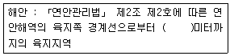
32. 주어진 시각적 선호모델과 독립변수들의 값을 사용한 특정 지역의 시각적 선호도 값은?
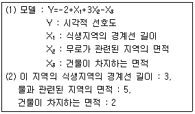
33. 이용 후 평가가 도입된 이후 설계 방법론에 대한 설명으로 옳은 것은?
34. 다음 중 레크레이션 계획의 접근 방법 분류에 해당하지 않는 것은?
35. 인간 행동의 움직임을 부호화한 표시법(motation symbols)을 창안하여 설계에 응용한 사람은?
36. 주차장의 주차구획 기준은 평행주차형식과 그 외의 경우로 구분된다. 평행주차형식 외의 경우 주차장의 주차구획 최소 기준이 맞는 것은? (단, 규격 표현은 너비×길이로 나타낸다.)
37. 시몬스(J.O.Simonds)가 제시하고 있는 공간구성의 4가지 요소 중 제3차 요소에 해당하는 것은?
38. 다음 중 생태·경관 보전지역에 포함되지 않는 것은?
39. 다음 중 아파트 단지 내 울타리 조성 방법 중 자연스러운 경관, 둔덕과 조화된 추가된 높이, 한 번 설치 후 유지관리비용 절감의 이점이 있는 방법은?
40. 생태연못 및 습지의 계획지침으로 적절하지 않은 것은?
3과목: 조경설계
41. 다음 중 유희시설 설계 시 고려할 사항이 아닌 것은?
42. 조경설계기준상 「경사로」설계 내용으로 옳은 것은?
43. 조경공간의 보도에 포장면 기울기 설명 중 ( )안에 알맞은 것은?
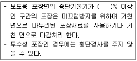
44. 다음 색에 관한 설명 중 옳은 것은?
45. 황금분할(golden section)에 관한 설명으로 옳지 않은 것은?
46. 다음 중 시각적 선호를 결정짓는 변수에 해당하지 않는 것은?
47. 다음 설명에 적합한 혼색 방법은?
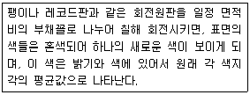
48. 인간 척도(human scale)에 관한 설명으로 틀린 것은?
49. 다음 기하학적 형태 주제 중 그 상징성과 의미가 부드러움, 혼합, 연결, 조화를 나타내는 것은?
50. 다음 환경미학과 관련된 설명 중 틀린 것은?
51. 경관분석 시 경관 통제점의 선정 기준에 적합하지 않는 것은?
52. 다음 중 조경설계기준상의 「조경석 놓기」에 대한 설명이 틀린 것은?
53. 할프린(halprin, 1965)에 의해서 수행된 연속적 경관구성에 관한 연구의 내용이라고 볼 수 없는 것은?
54. 형광등 아래서 물건을 고를 때 외부로 나가면 어떤 색으로 보일까 망설이게 된다. 이처럼 조명광에 의하여 물체의 색을 결정하는 광원의 성질은?
55. 독립식재의 평면적인 구성에 대한 설명 중 틀린 것은?
56. 다음 중 자연의 이미지를 형태화하기 위한 방법에 해당하는 것은?
57. 다음 투상도의 평면도로 가장 적합한 것은? (단, 제 3각법으로 도시하였다.)
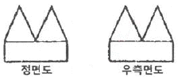
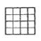
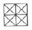
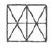
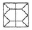
58. 조경설계기준상의 쓰레기통 설치기준에 대한 설명으로 옳지 않은 것은?
59. 인공지반에 자연토양 사용 시 식재된 식물에 필요한 최소 생육 토심이 틀린 것은? (단, 배수경사는 1.5~2.0%로 한다.)
60. 다음 중 경관구성 상 랜드마크(landmark)적 성격에 해당하지 않는 것은?
4과목: 조경식재
61. 다음 [보기]의 특징을 갖는 수종은?
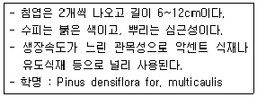
62. 다음 벤트그라스(Bentgrasses)에 관한 설명이 틀린 것은?
63. 거친 돌 조각물을 더욱 돋보이게 하기 위한 배경식재로 가장 적합한 것은?
64. 환경영향평가 항목 중 식생 조사를 할 때 위성 데이터를 활용하면 얻을 수 있는 유리한 점이 아닌 것은?
65. 다음 중 여름(6~9월)에 꽃의 향기를 맡을 수 없는 식물은?
66. 첨가제에 의한 토양 개량공법 중 물리성의 개량 방법이 아닌 것은?
67. 다음 중 생리적 기작에서 광보상점(혹은 광포화점)이 가장 낮은 수종은?
68. 벽면녹화 설계의 일반사항으로 적합하지 않은 것은?
69. 다음 참나무속(屬) 중 잎 뒷면에 성모(星毛)가 밀생하고, 잎이 대형이며 시원하고, 야성적인 미가 있어 자연풍처럼 조성에 적당한 수종은?
70. 카탈라제(catalase)에 대한 설명으로 옳은 것은?
71. 흉고 직경이 10cm인 나무의 근원 직경이 흉고 직경보다 2cm 더 컸다면 이 나무의 근원부 둘레는 얼마인가?
72. 다음 중 꽃 색이 다른 수종으로 연결된 것은?
73. 목본식물에 기생하는 외생균근을 형성하는 수목이 아닌 것은?
74. 은행나무(Ginkgo biloba L.)의 특징으로 틀린 것은?
75. 수목의 이식 적기는 수종에 따라 약간의 차이가 있을 수 있다. 다음 중 이식 시기와 관련된 설명으로 부적합한 것은?
76. 옥상정원(屋上庭園)의 계획 시 우선적으로 고려해야 할 내용이 아닌 것은?
77. 다음 중 자연풍경식 식재 수법으로 많이 이용되는 형식은?
78. 사고방지를 위한 식재 중 “명암순응식재”의 설명으로 부적합한 것은?
79. 식물의 줄기는 단독 또는 잎과 함께 그 모양이 달라지는 경우가 있는데, 다음 설명은 어떤 형태인가?
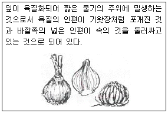
80. 식물명명의 기본원칙과 관련된 설명으로 옳지 않은 것은?
5과목: 조경시공구조학
81. 정지설계에서 가장 불필요한 도면은?
82. 일반적으로 강은 탄소함유량이 증가함에 따라 비중, 열팽창 계수, 열전도율, 비열, 전기 저항 등에 영향을 미친다. 다음 설명 중 틀린 것은?
83. 토지이용도별 기초유출계수의 표준값 중 표면 형태가 「잔디, 수목이 많은 공원」에 해당하는 계수 값은?
84. 포졸란(pozzolan) 반응의 특징이 아닌 것은?
85. 건설공사에서 사용되는 「선급금」에 대한 설명으로 옳은 것은?
86. 건설공사의 시방서 기재사항으로 가장 거리가 먼 것은?
87. 모멘트(moment)에 대한 설명으로 옳지 않은 것은?
88. 조경공사 현장에서 공정관리를 위해 사용되는 기성고 공정곡선에서 A, B, C, D의 공정 현황에 대한 설명으로 틀린 것은?
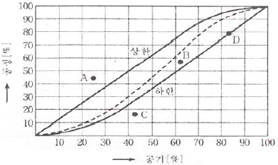
89. 표준길이보다 3mm 늘어난 50m 테이프로 정사각형의 어떤 지역을 측량하였더니, 면적이 250000m2이었다. 이때의 실제면적은 얼마인가?
90. 그림과 같이 외팔보에 하중에 작용할 때 전단력선도로 옳은 것은?
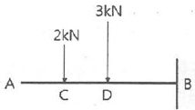
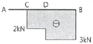
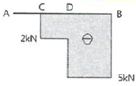
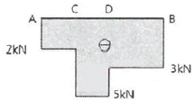
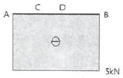
91. 다음 그림에서와 같은 평행력에 있어서 P1, P2, P3, P4의 합력의 위치는 0점에서의 몇 m거리에 있겠는가?
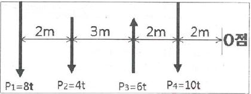
92. 수목 식재공사에서 지주목을 설치하지 않는 기계시공은 식재품의 몇 %를 감하는가?
93. 어느 지역 토양의 공극률(porosity) 측정을 위해 토양 60cm3을 채취하여 고형입자 부피와 수분 부피를 측정하였더니 각각 36cm3와 12cm3였다. 이 지역 토양의 공극률(%)은?
94. 면적을 계산하는 구적기(Planimeter)의 사용방법으로 틀린 것은?
95. 등고선에 대한 설명으로 맞는 것은?
96. 한중콘크리트에 대한 설명으로 옳은 것은?
97. 어느 토양 구조의 양단면적이 A1=100m2, A2=200m2이고, 중앙단면적은 120m2이다. 양단면간의 거리 L=10m일 때, 양단면적평균법(Q), 중앙단면적법(W), 각주공식(E)에 의한 토적(m3)의 조합으로 옳은 것은?
98. 미국농무부 기준의 거친 모래(조사) 굵기는?
99. 배수관망의 부설방법 중 적합하지 않은 것은?
100. 벽돌 외벽 시공시 고려해야 할 사항으로 가장 거리가 먼 것은?
6과목: 조경관리론
101. 질산태질소 화합물에 산성비료를 배합하면 이 때의 반응은?
102. 토양의 질산화작용(nitrification)에 대한 설명으로 옳지 않은 것은?
103. 다음 중 회양목명나방의 설명이 틀린 것은?
104. 주요 조경시설의 대표적인 중요 관리항목과 보수방법으로 가장 부적합한 것은?
1⑤. 농약의 사용법에 의한 약해로 가장 거리가 먼 것은?
106. 공사 현장에서의 부주의에 의한 사고방지대책 중 정신적 대책과 가장 거리가 먼 것은?
107. 수목관리를 할 때에 수형의 전체 모양을 일정한 양식에 따라 다듬는 작업은?
108. 다음 설명하는 파손의 형태는?
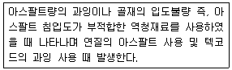
109. 주민참가에 의한 공원관리 활동 내용으로 적합하지 않은 것은?
110. 다음 설명의 ( )안에 적합한 용어는?
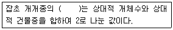
111. 잔디 녹병(Rust)의 방제대책으로 가장 거리가 먼 것은?
112. 옥외 레크레이션 관리체계에서 주요 기능의 부체계 관리요소가 될 수 없는 것은?
113. 화학적 반응 및 현상에 의한 토양질소의 변동 과정에 해당되지 않는 것은?
114. 수목의 병해에 대한 설명 중 옳지 않은 것은?
115. 다음 중 조경작업장에서 기계사용 관련 재해 발생 시 조치 순서 중 긴급처리의 내용으로 볼 수 없는 것은?
116. 미끄럼판에 사용되는 F.R.P 제품의 일반적 성질 중 물리적 성질이 아닌 것은?
117. 다음 특징의 병해가 주로 발생하는 수목은?
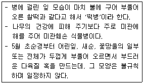
118. 다음 중 유희시설과 관련된 설명으로 가장 부적한 것은?
119. 자주목 관리에 관한 설명 중 옳지 않은 것은?
120. 조경운영 관리방식 중 직영방식과 비교한 도급방식의 단점에 해당하는 것은?